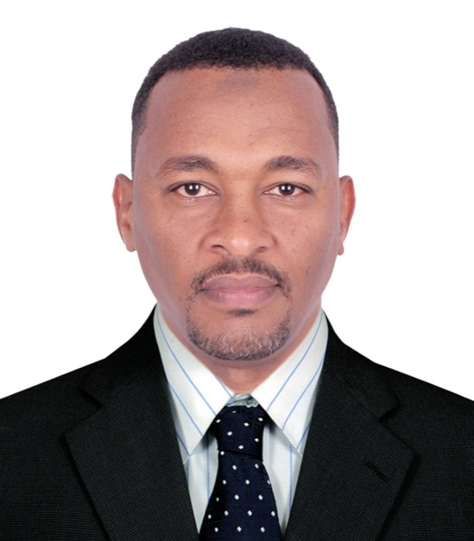

أبوبكر السر خلف اللهAbubakr Al-Sir Khalaf-allah
مدرّب رياضي ومعلّم تربية بدنية — أصحاب الهمم والطلابSports Coach and PE Teacher — People of Determination and Students
نبذةProfile
مدرّب رياضي ومعلّم تربية بدنية بخبرة تزيد على خمسة عشر عاماً مع أصحاب الهمم وطلاب المدارس. شارك مدرباً في بعثة السودان إلى الألعاب العالمية للأولمبياد الخاص في شنغهاي ٢٠٠٧ وأبوظبي ٢٠١٩. يعمل بصبر، ويركّز على ما يستطيع كل شخص فعله، ويرى في الرياضة طريقاً إلى الثقة بالنفس والانتماء والصحة النفسية. Sports coach and PE teacher with more than fifteen years of work with people of determination and school students. Coach with Sudan's team at the Special Olympics World Games in Shanghai 2007 and Abu Dhabi 2019. Patient, focused on what each person can do, and convinced that sport builds confidence, belonging and mental health.
أبرز المحطاتHighlights
- قاد تدريب عدّائي البعثة، وهو مسجّل مدرباً رئيسياً لألعاب القوى في القائمة الرسمية لبعثة السودان.Led the training of the team's runners; listed as head coach for athletics on Sudan's official team list.
- نال أحد الرياضيين الذين درّبهم الميدالية الفضية في الجري.One of the athletes he trained won a silver medal in running.
- شاركت البعثة في ألعاب القوى والسباحة وتنس الطاولة.Sudan's team competed in athletics, swimming and table tennis.
- أول ألعاب عالمية للأولمبياد الخاص في الشرق الأوسط وشمال أفريقيا، بمشاركة رياضيين من أكثر من ١٩٠ دولة.The first Special Olympics World Games in the Middle East and North Africa, with athletes from more than 190 countries.
- أقامت البعثة في الشارقة ضمن برنامج المدن المستضيفة، الذي استقبل وفود ٢٤ دولة.The team stayed in Sharjah as part of the Host Town programme, which welcomed teams from 24 countries.
- عاد السودان بـ٤٠ ميدالية: ٢٥ ذهبية و٨ فضيات و٧ برونزيات، في رياضات منها ألعاب القوى والسباحة والبوتشي ورفع الأثقال.Sudan came home with 40 medals (25 gold, 8 silver, 7 bronze) in sports including athletics, swimming, bocce and weightlifting.
التدريب والتدريسCoaching and teaching
معلّم تربية بدنيةPhysical Education Teacher
يونيو ٢٠١٧ – أبريل ٢٠١٩Jun 2017 – Apr 2019- تدريس التربية البدنية وفق منهج كامبريدج (CIE) لفصول متنوعة القدرات من الروضة حتى الصف الثاني عشر.Taught PE on the Cambridge (CIE) curriculum to mixed-ability classes from KG to Grade 12.
- تنظيم الأيام الرياضية ومسابقات البيوت والسباحة بمشاركة جميع الطلاب.Organised sports days, inter-house competitions and swimming galas that included every student.
مدرّب ومشرف لياقة بدنيةTrainer and Fitness Supervisor
يونيو ٢٠١٧ – أبريل ٢٠١٩Jun 2017 – Apr 2019- تصميم برامج تدريب فردية لأهداف مختلفة.Built individual training programmes for different goals.
- شرح التمارين وتصحيح الأداء لضمان تقدّم آمن بلا إصابات.Demonstrated exercises and corrected form for safe progress without injury.